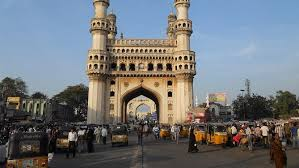

Nestled in the heart of southern India, Telangana is a state renowned for its rich cultural heritage, historical monuments, and vibrant traditions. Here's a glimpse into what makes Telangana a captivating destination:
Telangana is home to a wealth of historical monuments and architectural marvels that reflect its glorious past. Explore the majestic Golconda Fort in Hyderabad, a symbol of the region's grandeur and architectural brilliance, known for its imposing walls and intricate palaces.
Marvel at the iconic Charminar, a UNESCO World Heritage Site and a symbol of Hyderabad, adorned with four graceful minarets and an elegant mosque, standing as a testimony to the city's rich cultural heritage.
Immerse yourself in the vibrant cultural tapestry of Telangana, where age-old traditions and customs thrive alongside modern influences. Experience the colorful festivals of the state, including Bonalu, Bathukamma, and Deccan Festival, where traditional music, dance, and rituals are celebrated with fervor.
Witness traditional art forms such as Telugu folk dance, classical music, and the intricate craft of Bidriware, showcasing the artistic prowess and cultural richness of the region.
Telangana is dotted with numerous temples and sacred sites, offering spiritual solace and tranquility to visitors. Visit the iconic Bhadrachalam Temple, dedicated to Lord Rama, and witness the divine atmosphere and architectural splendor of this revered shrine.
Explore the ancient temples of Warangal, including the Thousand Pillar Temple and Ramappa Temple, known for their exquisite architecture and intricate carvings, which transport visitors to a bygone era of spiritual devotion and artistic brilliance.
Indulge in the culinary delights of Telangana, known for its flavorful cuisine and rich culinary heritage. Sample traditional dishes such as Hyderabadi Biryani, Telangana Ruchulu, and Sarva Pindi, served with a variety of spicy chutneys and delectable sweets.
Experience the warm hospitality of Telangana's people with a stay in a heritage hotel or homestay, where you can enjoy authentic local cuisine and immerse yourself in the traditions and customs of the region.
Whether you're fascinated by historical monuments, intrigued by cultural traditions, or seeking spiritual enlightenment, Telangana offers a diverse range of experiences for every traveler. Plan your journey to this enchanting state and immerse yourself in the heritage and harmony of Telangana.
